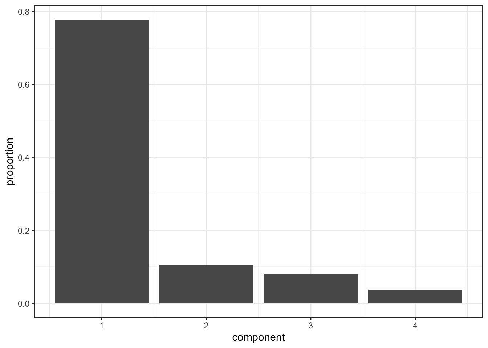
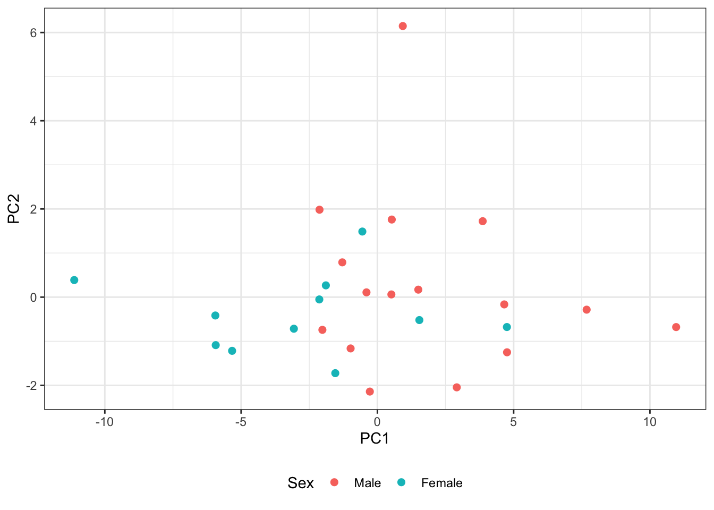
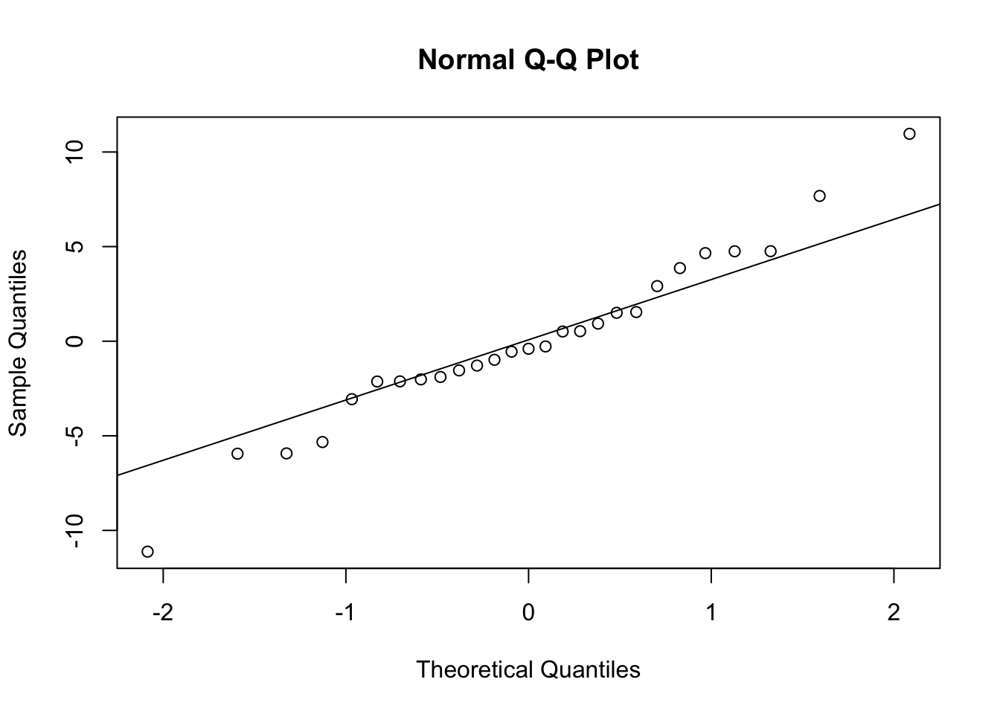

data("Orthodont", package = "nlme")
orth_wide <- as.data.frame(Orthodont) |>
mutate(age = paste0("age", age)) |>
select(Subject, Sex, age, distance) |>
pivot_wider(names_from = age, values_from = distance) |>
arrange(Subject)
Y <- as.matrix(orth_wide[paste0("age", c(8, 10, 12, 14))])8. Multivariate testing and PCA
1. Aim
Classical multivariate tests assess vector mean hypotheses while accounting for covariance among response components. PCA constructs orthogonal linear combinations maximizing sample variance and is used for dimension reduction or visualization; it does not use outcome/group labels and does not itself estimate a longitudinal mean model.
2. Model specification
For \(p\)-variate vectors \(Y_i\sim N_p(\mu_g,\Sigma)\), MANOVA tests \(H_0:C\mu=0\) using eigenvalues of \(E^{-1}H\) (Wilks, Pillai, Hotelling–Lawley, or Roy statistics). PCA diagonalizes the sample covariance/correlation matrix, \[ S=V\Lambda V^{\mathsf T},\qquad Z_k=(Y-\bar Y) v_k,qquad \operatorname{Var}(Z_k)=\lambda_k. \]
3. R packages/functions
Base manova()/summary.mlm() compute multivariate tests; stats::prcomp() uses an SVD for stable PCA; factanal() fits a common-factor model; cmdscale() supplies classical metric MDS/PCoA.
4. Data
nlme::Orthodont is reshaped to one row per subject and one response column per age, producing a four-dimensional longitudinal response vector.
5. Fit
mv_fit <- manova(Y ~ Sex, data = orth_wide)
summary(mv_fit, test = "Pillai") Df Pillai approx F num Df den Df Pr(>F)
Sex 1 0.3977 3.6317 4 22 0.02034 *
Residuals 25
---
Signif. codes: 0 '***' 0.001 '**' 0.01 '*' 0.05 '.' 0.1 ' ' 1summary(mv_fit, test = "Wilks") Df Wilks approx F num Df den Df Pr(>F)
Sex 1 0.6023 3.6317 4 22 0.02034 *
Residuals 25
---
Signif. codes: 0 '***' 0.001 '**' 0.01 '*' 0.05 '.' 0.1 ' ' 1summary(mv_fit, test = "Hotelling-Lawley") Df Hotelling-Lawley approx F num Df den Df Pr(>F)
Sex 1 0.6603 3.6317 4 22 0.02034 *
Residuals 25
---
Signif. codes: 0 '***' 0.001 '**' 0.01 '*' 0.05 '.' 0.1 ' ' 1summary.aov(mv_fit) # componentwise follow-up tests Response age8 :
Df Sum Sq Mean Sq F value Pr(>F)
Sex 1 18.688 18.6877 3.4508 0.07504 .
Residuals 25 135.386 5.4155
---
Signif. codes: 0 '***' 0.001 '**' 0.01 '*' 0.05 '.' 0.1 ' ' 1
Response age10 :
Df Sum Sq Mean Sq F value Pr(>F)
Sex 1 16.381 16.3807 3.9144 0.05899 .
Residuals 25 104.619 4.1848
---
Signif. codes: 0 '***' 0.001 '**' 0.01 '*' 0.05 '.' 0.1 ' ' 1
Response age12 :
Df Sum Sq Mean Sq F value Pr(>F)
Sex 1 45.014 45.014 6.9727 0.01406 *
Residuals 25 161.393 6.456
---
Signif. codes: 0 '***' 0.001 '**' 0.01 '*' 0.05 '.' 0.1 ' ' 1
Response age14 :
Df Sum Sq Mean Sq F value Pr(>F)
Sex 1 74.375 74.375 14.918 0.000705 ***
Residuals 25 124.643 4.986
---
Signif. codes: 0 '***' 0.001 '**' 0.01 '*' 0.05 '.' 0.1 ' ' 1pca_cov <- prcomp(Y, center = TRUE, scale. = FALSE)
pca_cor <- prcomp(Y, center = TRUE, scale. = TRUE)
summary(pca_cov)Importance of components:
PC1 PC2 PC3 PC4
Standard deviation 4.5136 1.6495 1.4515 0.98629
Proportion of Variance 0.7784 0.1040 0.0805 0.03717
Cumulative Proportion 0.7784 0.8823 0.9628 1.00000pca_cov$rotation PC1 PC2 PC3 PC4
age8 0.4417173 -0.7841470 0.28658880 0.3284297
age10 0.3958890 0.2416250 0.68907271 -0.5568376
age12 0.5762762 -0.1118055 -0.66499530 -0.4617212
age14 0.5621952 0.5605625 -0.02875609 0.6073544scree <- data.frame(
component = seq_along(pca_cov$sdev),
variance = pca_cov$sdev^2,
proportion = pca_cov$sdev^2 / sum(pca_cov$sdev^2)
)
ggplot(scree, aes(component, proportion)) + geom_col() +
scale_x_continuous(breaks = scree$component)
scores <- data.frame(pca_cov$x, Sex = orth_wide$Sex)
ggplot(scores, aes(PC1, PC2, color = Sex)) + geom_point(size = 2)
# Additional multivariate methods covered in STAT 571.
factor_fit <- factanal(Y, factors = 1, rotation = "none")
factor_fit
Call:
factanal(x = Y, factors = 1, rotation = "none")
Uniquenesses:
age8 age10 age12 age14
0.456 0.359 0.238 0.185
Loadings:
Factor1
age8 0.738
age10 0.801
age12 0.873
age14 0.903
Factor1
SS loadings 2.762
Proportion Var 0.691
Test of the hypothesis that 1 factor is sufficient.
The chi square statistic is 4.83 on 2 degrees of freedom.
The p-value is 0.0895 pc_dist <- dist(scale(Y))
mds <- cmdscale(pc_dist, k = 2, eig = TRUE)
head(mds$points) [,1] [,2]
[1,] -0.8299395 -0.4003786
[2,] -0.7603456 0.8708950
[3,] -0.5105576 0.2337541
[4,] -0.2922557 -0.3830414
[5,] -0.2532435 -0.1250432
[6,] -0.1630799 -1.00609986. Extract & interpret
Pillai/Wilks tests address the joint sex difference across the four-age response vector; univariate follow-ups require multiplicity control and do not replace the joint test. PCA loadings define each linear combination, scores locate subjects, and \(\lambda_k/\sum\lambda_j\) is explained variance. Covariance PCA emphasizes occasions with larger variance; correlation PCA standardizes each occasion. Factor loadings represent a latent common-factor covariance model and are not PCA loadings. PCoA/MDS preserves pairwise distances rather than maximizing variance directly.
7. Diagnostics
stopifnot(!anyNA(Y), nrow(Y) > ncol(Y))
eigen(cov(Y), symmetric = TRUE)$values[1] 20.3726150 2.7207655 2.1069361 0.9727603reconstruction_2pc <- sweep(
pca_cov$x[, 1:2, drop = FALSE] %*% t(pca_cov$rotation[, 1:2, drop = FALSE]),
2, pca_cov$center, "+"
)
sqrt(mean((Y - reconstruction_2pc)^2))[1] 0.8610508qqnorm(pca_cov$x[, 1]); qqline(pca_cov$x[, 1])
For MANOVA, examine multivariate outliers, covariance heterogeneity, rank, and complete-case support. For PCA, assess scaling, dominance by outliers, scree stability, loading sign arbitrariness, and reconstruction error.
8. Caveats
- Multivariate normality and common covariance are finite-sample assumptions for classical MANOVA; Pillai is often comparatively robust but not assumption-free.
- A significant MANOVA does not identify which occasion or contrast drives the result.
- PCA components are sample-dependent, sign-indeterminate, and unsupervised; selecting components by group separation leaks outcome information.
- Complete-case wide matrices can discard substantial longitudinal information; LMM/GEE are preferable for irregular incomplete follow-up when the estimand is a trajectory effect.
- PCA of repeated occasions mixes level and change; interpret loadings against the time ordering.
- Source-backed: multivariate test statistics, PCA, factor analysis, PCoA, and MDS follow STAT 571. Standard-practice addition: the Orthodont reshaping makes all code self-contained.
9. Source references
/Users/wenbinwu/Documents/UW/25Winter/STAT571/notes/8.0 - Multivariate_Analysis_1_Testing.pdf, pp. 3–16, 18–30, and 32–35 (MVN, Hotelling, MANOVA statistics)./Users/wenbinwu/Documents/UW/25Winter/STAT571/notes/8.1 - Multivariate_Analysis_2_PCA.pdf, pp. 1–21, 24–39, and 44–51 (PCA, factor analysis, PCoA/MDS)./Users/wenbinwu/Documents/UNC/26Spring/BIOS767/Lecture-Notes/BIOS-767-Part-006.pdf, pp. 4–23 (longitudinal MANOVA/profile analysis)./Users/wenbinwu/Documents/UW/25Winter/STAT571/project/Bumjun/fpca.Rmd, R code chunks (functional PCA estimation and eigenfunction visualization; project-specific extension).